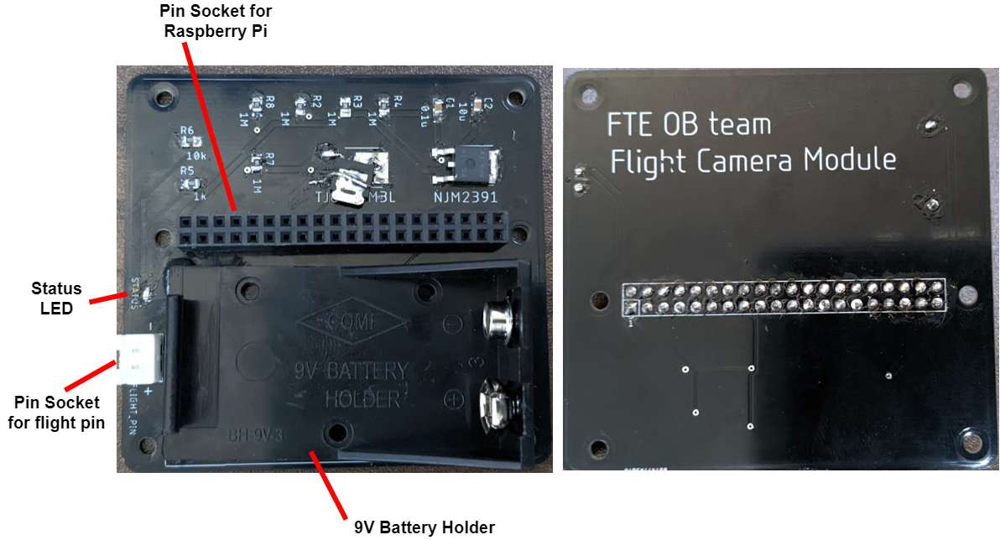

Flight Camera
Assembly
If you finish activation of the flight camera mode referencing the page, you can go forward to the next step, assembly of the module. In this section, details of components and their assembly are explained.
Board Overview
The figure below is a board of the flight camera module. The module has some features:
- Status LED tells status of the program in the flight camera mode.
- XH pin socket is the interface to a flight pin.

Raspberry Pi Zero
The below picture is of a Raspberry Pi Zero. Raspberry Pi Zero has 40 of GPIO pins and some interfaces, e.g. HDMI, USB and Raspberry Pi Camera. It is recommended to connect to a monitor and keyboard when you setup a Raspberry Pi.

Setup a Raspberry Pi Zero without a monitor
There is a way to setup a Raspberry Pi Zero without a monitor, but it is not recommended because it has more steps for setup and you cannot get any signals if there is something wrong.
Connecting a Camera
-
Prepare a Raspberry Pi Camera and flexible cable for Raspberry Pi Zero. Note that the cable for Raspberry Pi Zero is not same as one of Type A or B.

-
Raspberry Pi Zero has a camera socket and its stopper (black part of the bottom). Put the stopper down to insert the cable.

-
Insert the cable into the socket and put the stopper in to fix the cable.

Board Assembly
- Insert GPIO pins into the pin socket on the board.
- Connect a flight pin cable to the XH socket.
- Put in a 9V battery to the battery holder. And then, the Raspberry Pi starts to boot.

Flow of the program
Operations
- Program starts at booting.
- Status LED blinks until the flight pin is connected.

- After the flight pin is connected, the status LED is turned off until the flight pin is to be disconnected.
- When the flight pin is disconnected, the stauts LED is turned on and recording starts.
- Observing if any commands occur while recording.
- When the time elapses to the value of
timeoutor a command is detected, recording stops. - If the setting is configured, the system is automatically shutted down.
Commands
There are some commands for users to operate state of the program.
| name | condition | description |
|---|---|---|
| NULL | --- | No commands are activated. |
| RESTART | Flight pin connection in more than threshold_restart seconds. |
Program will stop recording and restart from the begging. Parameter threshold_restart can be set in glm.py, defaults 5 seconds. |
| EXIT | Flight pin connection in less than threshold_exit seconds, and then disconnection in more than threshold_exit seconds. |
Program will stop recording and exit immediately without shutting down. Parameter threshold_exit can be set in glm.py, defaults 2 seconds. |
Flowchart
Characters in red in the flowchart below are parameters in the application. For more information, see Setting.

Outputs
The flight camera application outputs two kinds of files, one is a movie file and the other is a log file.
Movie Files
Movie files are the main outputs of the application. You can specify path to a movie file before activating the flight camera mode, by writing the path to glm.py. See Setting for details.
In the default setting, the format of movie files is .h264. This format could not be played in your favorite movie player. It is recommended using VLC media player for playing the format of movies. However, there can exist block noise when playing .h264 videos, so it might be ideal that you convert .h264 format to .mp4 (which is possible using like the site).
Log Files
Log files are useful to analysis state of the application, especially during debug. You can also specify path to a log file before activating the flight camera mode. See Setting for more information.
The log level of the application can be changed in glm.py. You can specify logging.DEBUG as parameter log_level to output verbose log for debugging.
Below is an example of the log output.
[2022-08-02 03:59:53,126] [INFO] Start the Flight camera mode. Setting; glm_name: main, timeout: 210.0, pin_flight: 22, pin_led: 12, file_mov: mov-220802-035953.h264, file_log: mov-220802-035953.log, parent_dir: None, resolution: (1920, 1080), framerate: 30, interval: 0.1, led_blink_freq: 2.0, log_level: 20, check_waiting_time: False
[2022-08-02 03:59:53,218] [INFO] Waiting a flight pin to be connected...
[2022-08-02 04:00:01,074] [INFO] Detected that the flight pin was connected.
[2022-08-02 04:00:01,075] [INFO] Wating the flight pin to be disconnected...
[2022-08-02 04:00:03,034] [INFO] Detected that the flight pin was disconnected.
[2022-08-02 04:00:03,034] [INFO] Start recording.
[2022-08-02 04:03:33,151] [INFO] Stop recording.
Extract data from SD cards
Your Windows couldn't recognize data in SD cards used in Raspberry Pi because of difference of formats. Thus, you should do unusual operation to extract the data.
Use 3rd-party applications
There are some applications that can read data in ext file systems like Raspberry Pi. You can pick favorite one from the list below:
Transfer via HTTP
If you have another Raspbery Pi, which is not broken and whose WiFi setting (tethering is recommended) is already done, you can insert the SD card to the Raspberry Pi and transfer data via HTTP communication.
- Enable network connection of a Raspberry Pi. If network setting is not done yet, configure referencing the section.
- Confirm IP address of the Raspberry Pi:
ip a # Example of output # ... # 2: wlan0: <BROADCAST,MULTICAST,UP,LOWER_UP> mtu 1500 qdisc mq state UP group default qlen 1000 # link/ether ff:ff:ff:ff:ff:ff brd ff:ff:ff:ff:ff:ff # inet 192.168.x.x/24 brd 192.168.x.255 scope global noprefixroute eth0 # ↑ this is the IP address. - Change the working directory to directory which has files you want to send.
cd [/path/to/directory] # e.g. cd / - Start HTTP server specifying the IP address.
# Change the IP address to one of your environment. sudo python -m http.server -b 192.168.x.x 80 - Open a browser in your smart phone or PC in the same network as the Raspbery Pi.
- Enter the URL:
# Change the IP address to one of your environment. # Change the file name to one you want to send. http://192.168.x.x/[file_name]
Transfer via SSH
If you have another Raspbery Pi, which is not broken and whose WiFi setting (tethering is recommended) is already done, you can insert the SD card to the Raspberry Pi and transfer data via SSH communication.
- Enable network connection of a Raspberry Pi. If network setting is not done yet, configure referencing the section.
- Enable the SSH server:
sudo raspi-config # 1. Select [Interface Options] # 2. Select [SSH] # 3. Select [Yes] - Confirm IP address of the Raspberry Pi:
ip a # Example of output # ... # 2: wlan0: <BROADCAST,MULTICAST,UP,LOWER_UP> mtu 1500 qdisc mq state UP group default qlen 1000 # link/ether ff:ff:ff:ff:ff:ff brd ff:ff:ff:ff:ff:ff # inet 192.168.x.x/24 brd 192.168.x.255 scope global noprefixroute eth0 # ↑ this is the IP address. - Open a terminal (PowerShell in Windows) in your PC in the same network as the Raspberry Pi, and run the command:
# Change the IP address to one of your environment. # Change paths in remote and local to ones you want to send and received. scp obteam@192.168.x.x:/path/to/file /local/path/to/file # Enter passphrase of the Raspberry Pi.